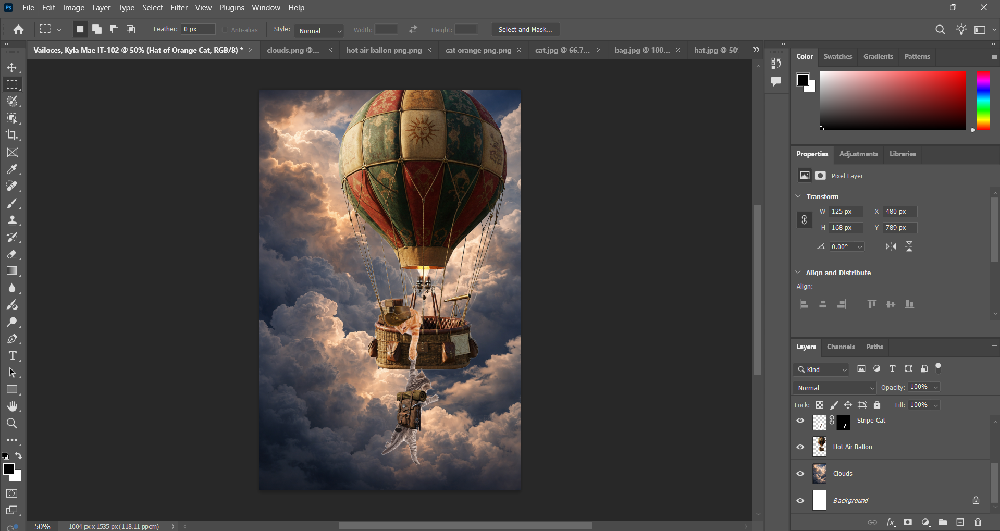

Description:
This digital artwork was created using Adobe Photoshop, featuring a story of friendship and adventure. It shows a cat traveling in a hot air balloon to save its friend during a journey through the skies. The composition focuses on storytelling through visual elements, blending imagination, emotion, and adventure in a single scene. I carefully arranged layers, images, and effects to create depth and atmosphere, making the scene feel alive and cinematic.
Tools / Technologies Used:
Adobe Photoshop
Layer Masking
Image Compositing
Brush Tools
Blending Modes
Basic Photo Manipulation Techniques